什么是城市营销？城市营销，就是把城市推销给投资者、移民者和旅游者。今天的城市品牌营销案例的主角——固安工业园区，它是河北省的一个县，挨着北京的大兴。2002年，固安工业园区动工。2003年，华与华介入固安的城市品牌策划工作。彼时的固安是一个传统的农业县城，产业基础薄弱；今天，它的经济总量实现了40倍的几何级增长。2015年7月，国家发改委发布了首批《PPP项目库专栏》，固安工业园区作为唯一的新型城镇化项目入选，获得国务院通报表扬，成为全国推广学习的模范！
城市营销首先是“地点”营销
对一个城市的营销来说，第一个要解决的问题就是让人知道它在哪儿！营销的是一个地点，找到这个地点的“地标符号”，用一个符号、一句话让人知道这个地方。中国的符号是什么？长城。上海的符号是什么? 外滩。北京的符号? 天安门。固安的符号? 找不到。至少当时说不出一个东西来。如何把固安这个“地点”营销出去？如何找到这个符号，让投资者认识它，喜欢它，马上想去看看它呢？
固安的地点优势
我们先来看看固安的城市地点优势区位：地处北京、天津、保定三市中心，与北京大兴仅隔一条永定河，距 北京天安门直线距离50公里。交通：大广高速向南直达固安，多条高速、铁路在固安交汇。历史：古有“天子脚下”之称，北京向南的这条路，是明清皇帝出行的专用“御道”。
超级符号打造城市品牌传奇
在分析了固安的地点优势之后，我们放大范围，找到了一个中国最大的超级地标、超级符号——北京天安门，然后——正南50公里。这样一来， “天安门正南50公里”，大家一听就知道固安在哪里了，它的投资价值也出来了。对于投资者来说，这句话精确地告诉了他固安工业园区的位置——天安门正南50公里。除此之外，它还带来很多联想：这是一个离北京很近的地方。这里可以很方便享有北京的生活、医疗、教育等超级都市配套资源。这里有立体的交通网络，首都机场、天津机场、天津港、密集的高速公路网，以及在建的首都第二机场。……
这个符号嫁接，把北京的符号嫁接给了固安，把北京和天安门的“原力”嫁接给了固安。一个本来完全陌生的地方一下子让人感觉非常熟悉，不仅熟悉，还亲切，这不正是一个新品牌梦寐以求的吗？
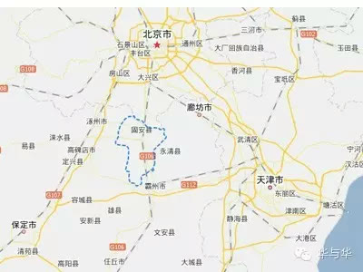
有了“天安门正南50公里”这个品牌超级符号，我们觉得还不够，我们又从歌颂伟大领袖毛主席的歌曲中找到一句品牌超级话语——我爱北京天安门，从而得到完整的口号：“我爱北京天安门正南50公里！” 这就给固安插上了一对品牌的翅膀，让固安这个城市品牌飞了起来。在图形符号的设计上，参考天安门城楼前的标语牌，最终创意出了我们所看到的完整的超级符号。
品牌超级话语，要能让人行动
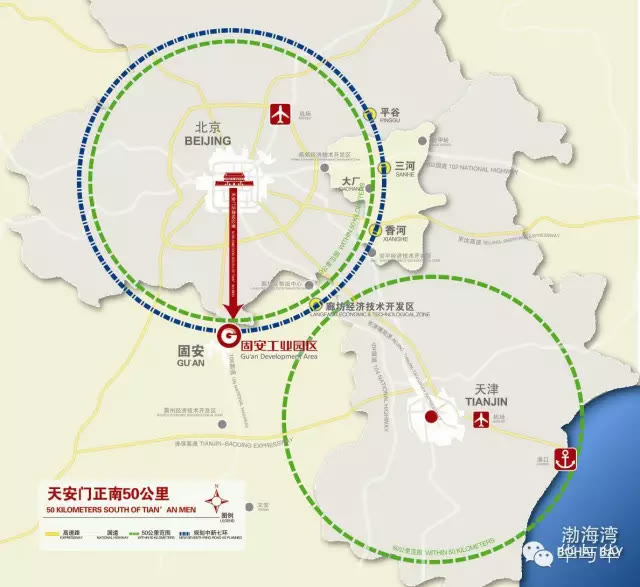
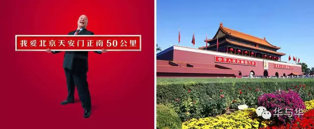
品牌超级话语，一句话说动消费者。说动消费者，就是消费者听到这句话后会行动。要说动，既不需要经过说清、也不需要说服。“我爱北京天安门正南50公里，固安工业园区”，这句话能把固安工业园区的顾客——投资选址的企业——说动。对于投资者来说，这句话精确并极富想象力地告诉了他固安工业园区的位置——天安门正南50公里，暗示着他可以享受到北京的超级都市配套，中国最好的资源都在触手可得的范围。投资建厂在天安门正南50公里，是不是很棒啊！所以这句话信息量巨大！
嫁接人类文化，并与人类的宏大叙事相结合！
这一句话，感情含量也很大！我们选择《我爱北京天安门》这首歌颂伟大领袖毛主席的歌曲嫁接固安，使得固安工业园区的商业动机，不再需要掩饰，而是被放大并与时代的宏大主题相结合。这句话包含了人们头脑里的一个丰富的记忆包，打开了一个文化资产的宝库。它勾起了一大批经历过那个年代的企业家们的回忆。人总是会触景生情，就有了想去看一看的冲动。固安工业园区本来是一个新的品牌，这句话使它获得了“我爱北京天安门”的文化资产，成为固安工业园区的“品牌资产”。我们取得了《我爱北京天安门》这首歌的授权，改编了固安版的《我爱北京天安门》，给固安工业园区的品牌带来巨大的推动力。
我爱北京天安门，正南50公里小城市有大志气，固安人民欢迎你我爱北京天安门，正南50公里固安人民欢迎你，未来城市在这里
固安工业园区10周年欢庆晚会上，儿童大合唱《我爱北京天安门正南50公里》
一战而定，一以贯之华与华是战略创意公司，为企业和企业家制定战略，并用创意引爆战略。我们追求一战而定，这是吴起的思想：天下战国五胜者祸，四胜者弊，三胜者霸，二胜者王，一胜者帝。是以数胜而得天下者稀，而亡者众。
“我爱北京天安门正南50公里”，以“天安门”为超级符号，以“我爱北京天安门”为超级话语，构成了固安工业园区城市品牌的超级创意！也就有了固安工业园区最具价值的城市品牌资产和一切品牌体验的核心。回顾我们为固安工业园区服务的历程，在创作出“我爱北京天安门正南50公里”之前，也策划了很多优秀的创意。•2005年，华与华为固安工业园区提出“未来城市试验区”的战略定位，并将固安工业园区多年积累的城市建设经验，总结为十六字方针，即：公园城市、休闲街区、儿童优先、产业聚集。•2006年，基于“未来城市试验区”的战略定位，以”孕育“为创意点创作了“全球城市经验，中国未来梦想”为主题的广告创意。•2007年，提出具有历史意义的推广主题创意——“后六环时代、大北京未来城市”。
中国廊坊5.18国际经济贸易洽谈会固安工业园区展会形象-----开启后六环时代
但这些创意都不够“一战而定”，直到我们创作出“我爱北京天安门正南50公里”，我们知道成了，固安工业园区最具价值、最值得长期投资、重复积累的品牌创意诞生了。接下来，就是一以贯之，持续投资！坚持100年不动摇！
全方位城市品牌营销和体验系统
有了一战而定的“我爱北京天安门正南50公里，固安工业园区”之后。我们从来之前→来之中→走之后三个阶段展开了全方位的城市品牌营销和体验设计。
来之前如何在“来之前”让人知晓、产生期待？尤其是针对企业投资者？我们在他们最常接触的媒体（航机杂志、党政媒体、北京高速路口）投放广告，在园区建设初期对招商和城市品牌推广起到了至关重要的作用。
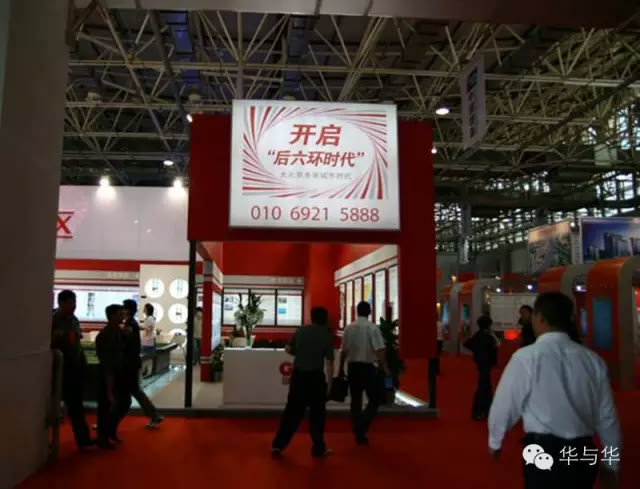
来之中前面说了，每个来的人是带着期待来的，那么人来了，怎样创造好的体验，增加合作、签约的成功率呢？这就需要一套完整的体验管理系统，让来宾超出预期，产生惊喜！1 城市体验包装系统从看到固安的第一眼起，你就能感受到固安整齐划一的城市品牌形象。从城市入口到城区包装再到公园、广场的指示设施，以“我爱北京天安门正南50公里”的超级符号为主识别，我们为固安工业园区在域内做了全面的城市体验包装系统。
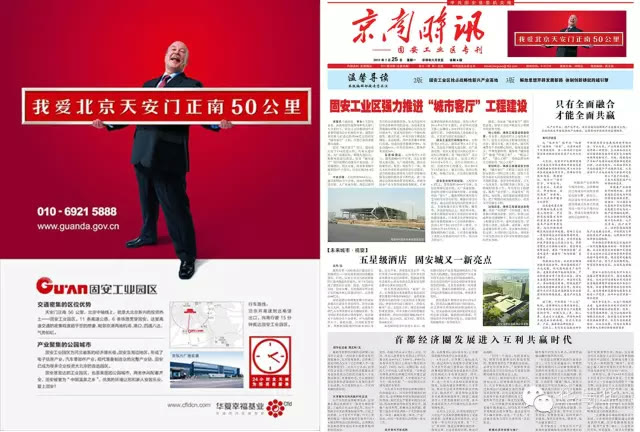
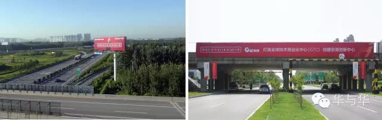
2 丰富多彩的城市节日产品开发“世界玩什么、固安玩什么”，我们为固安策划了4大类城市节日活动：生态保护类、节庆节日类、运动活力类、流行文化类；将城市节日打造成固安城市的一个个产品，创造吸引人们前来的一个个购买理由！
已经举办了两届的固安自行车公开赛，成为固安最具活力的运动赛事
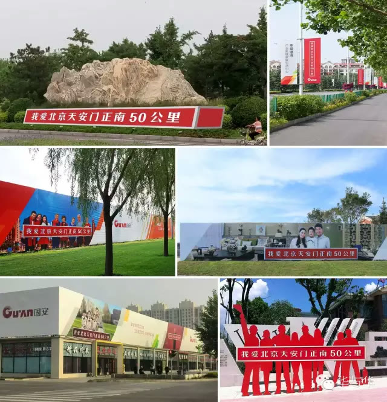
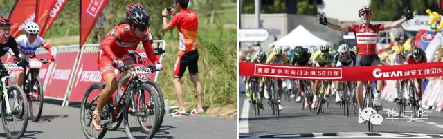
2015年12月25日举办的圣诞跑活动
“我爱北京天安门正南50公里”六一儿童节、春节3 以城市品牌营销为导向的城市规划馆、招商展厅对城市而言，媒体不仅是报纸、电视、户外、手机，展厅、规划馆同样是非常重要的传播渠道。
廊坊518经贸洽谈会上固安工业园区的展览设计
在做展馆规划时，第一个要明确的是给谁看。以固安规划馆为例：给关心我们的政府领导看、给想来投资的企业看，给其他前来学习的兄弟城市看。
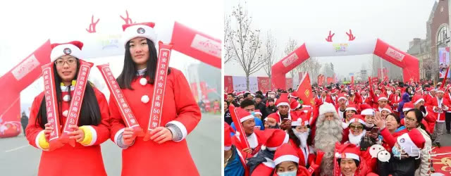
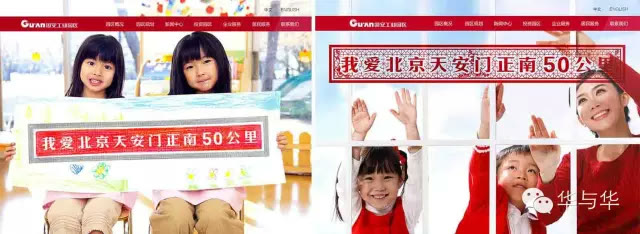
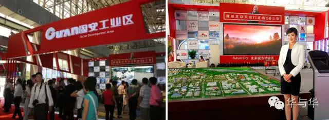
固安规划馆
第二，我们希望嘉宾参观之后记得什么呢？我们希望他记得什么，就设置什么样的内容环节和结论性观点在这个展览陈设中。这些结论性观点也是我们希望参观者回去之后向人介绍、向领导汇报的内容。整个固安规划馆都以“我爱北京天安门正南50公里”歌曲为主旋律，并且来宾在参观结束后，都会和“我爱北京天安门正南50公里”的标语牌合影留念。
来之后最后结合我们的城市特色和品牌符号设计参观者带回去后还能不断被提起、被谈论的“信物”。比如我们去巴黎带回来一个埃菲尔铁塔纪念品摆在家里，朋友来家里时看到，我们所去的地方就又被谈论一次，这就创造了二次传播的机会。我们围绕固安的城市特色开发了“固安礼物”这一产品，把固安的文化、民俗、历史、产业特色等融入到礼品的创意设计中，创造了一个个传播固安、宣传固安的新媒体。
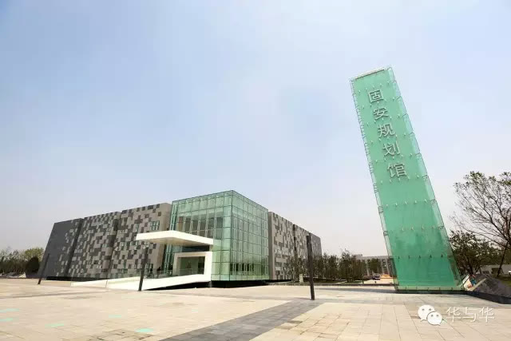
从2002到2015，固安工业园区发生了天翻地覆的变化。我们有幸自2003年开始与固安工业园区合作至今，见证了固安的成长奇迹，并以创造了“我爱北京天安门正南50公里”这一城市品牌传奇倍感荣耀！附 ：固安工业园区成长大事记
2002年，固安工业园区奠基开工。2003年，华与华与固安工业园区展开合作，提供园区招商和城市品牌营销的全面服务。2005年，华与华为固安工业园区提出了“未来城市试验区”的战略定位，并将固安工业园区的城市建设经验，总结为十六字方针，即：公园城市、休闲街区、儿童优先、产业聚集。2007年，华与华为固安提出 “后六环时代，大北京未来城市”推广主题，并以此设计固安工业园区“中国廊坊5.18国际经贸洽谈会”展会形象。2008 年，华与华创作出“我爱北京天安门正南 50 公里，固安工业园区”城市品牌超级话语。2009年“我爱北京天安门正南50公里，固安工业园区”全面投入品牌推广。2008年，河北省商务厅在全省开发区中推广“政府主导、企业运作”为主要内容的“固安模式”。2013年，固安工业园区 10年间工业总产值从 2亿元攀升至 112亿元,一跃成为河北经济新的增长极。2015年，在中国社会科学院发布的国内首份《中国县域经济发展报告（2015）》中，固安荣列“中国县域经济创新力50强”第三名，同时位列“全国县域经济发展潜力百强县”的第十。2015 年 7 月，固安工业园区以唯一一个新型城镇化项目入选国家发改委首批《 PPP 项目库专栏》，获得国务院通报表扬，成为全国推广学习的模范！
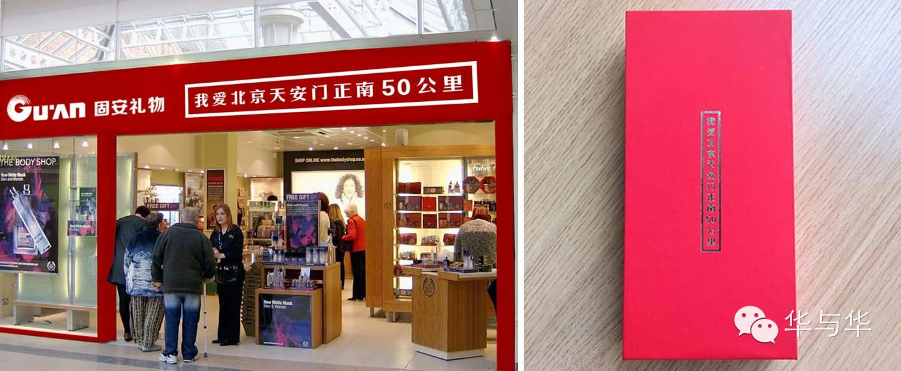